1. ¿Un catión gana protones para formar una carga positiva o pierde electrones?
2. El sulfato de hierro (III) [$Fe_2 (SO_4)_3$] está compuesto de iones $Fe_3^+$ y $SO_4^{2−}$. Explica por qué una muestra de sulfato de hierro (III) no está cargada.
3. ¿Cuál de los siguientes átomos se esperaría que formara iones negativos en compuestos iónicos binarios y cuál se esperaría que formara iones positivos: P, I, Mg, Cl, In, Cs, O, Pb, Co?
4. ¿Cuál de los siguientes átomos se esperaría que formara iones negativos en compuestos iónicos binarios y cuáles se esperaría que formaran iones positivos: Br, Ca, Na, N, F, Al, Sn, S, Cd?
5. Predecir la carga en los iones monoatómicos formados a partir de los siguientes átomos en compuestos iónicos binarios: (a) P (b) Mg (c) Al (d) O (e) Cl (f) Cs
6. Predecir la carga en los iones monoatómicos formados a partir de los siguientes átomos en compuestos iónicos binarios: (a) I (b) Sr (c) K (d) N (e) S (f) In
7. Escribe la configuración electrónica para cada uno de los siguientes iones: (a) $As^{3–}$ (b) $I^–$ (c) $Be^{2+}$ (d) $Cd^{2+}$ (e) $O^{2–}$ (f) $Ga^{3+}$ (g) $Li^+$ (h) $N^{3–}$ ( i) $Sn^{2+}$ (j) $Co^{2+}$ (k) $Fe^{2+}$ (l) $As^{3+}$
8. Escribe la configuración electrónica para los iones monoatómicos formados por los siguientes elementos (que forman la mayor concentración de iones monoatómicos en el agua de mar): (a) Cl (b) Na (c) Mg (d) Ca (e) K (f ) Br (g) Sr (h) F
9. Escribe la configuración electrónica completa para cada uno de los siguientes átomos y para el ion monoatómico que se encuentra en los compuestos iónicos binarios que contienen el elemento: (a) Al (b) Br (c) Sr (d) Li (e) As (f ) S
10. De las etiquetas de varios productos comerciales, prepara una lista de seis compuestos iónicos en los productos. Para cada compuesto, escribe la fórmula (es posible que debas buscar algunas fórmulas en una referencia adecuada).
11. ¿Por qué es incorrecto hablar de una molécula de $NaCl$ sólido?
12. ¿Qué información puedes usar para predecir si un enlace entre dos átomos es covalente o iónico?
13. Predecir cuáles de los siguientes compuestos son iónicos y cuáles son covalentes, basándote en la ubicación de sus átomos constituyentes en la tabla periódica: (a) $Cl_2CO$ (b) $MnO$ (c) $NCl_3$ (d) $CoBr_2$ (e) $K_2S$ (f ) $CO$ (g) $CaF_2$ (h) $HI$ (i) $CaO$ (j) $IBr$ (k) $CO_2$
14. Explica la diferencia entre un enlace covalente no polar, un enlace covalente polar y un enlace iónico.
15. Desde su posición en la tabla periódica, determina qué átomo en cada par es más electronegativo: (a) Br o Cl (b) N u O (c) S u O (d) P o S (e) Si o N (f) Ba o P (g) N o K
16. Desde su posición en la tabla periódica, determina qué átomo en cada par es más electronegativo: (a) N o P (b) N o Ge (c) S o F (d) Cl o S (e) H o C (f) Se o P (g) C o Si
17. Desde sus posiciones en la tabla periódica, organice los átomos en cada una de las siguientes series en orden de electronegatividad creciente: (a) C, F, H, N, O (b) Br, Cl, F, H, I ( c) F, H, O, P, S (d) Al, H, Na, O, P (e) Ba, H, N, O, As
18. Desde sus posiciones en la tabla periódica, organiza los átomos en cada una de las siguientes series en orden de electronegatividad creciente: (a) As, H, N, P, Sb (b) Cl, H, P, S, Si ( c) Br, Cl, Ge, H, Sr (d) Ca, H, K, N, Si (e) Cl, Cs, Ge, H, Sr
19. ¿Qué átomos pueden unirse al azufre para producir una carga parcial positiva en el átomo de azufre?
20. ¿Cuál es el enlace más polar? (a) $\ce{C – C}$ (b) $\ce{C – H}$ (c) $\ce{N – H}$ (d) $\ce{O – H}$ (e) $\ce{Se – H}$
21. Identifica el enlace más polar en cada uno de los siguientes pares de enlaces: (a) HF o HCl (b) NO o CO (c) SH u OH (d) PCl o SCl (e) CH o NH (f) SO o PO (g) CN o NN
22. ¿Cuál de las siguientes moléculas o iones contienen enlaces polares? (a) $O_3$ (b) $S_8$ (c) $O_2^{2−}$ (d) $NO^{3−}$ (e) $CO_2$ (f) $H_2S$ (g) $BH_4^-$
23. Escribe los símbolos de Lewis para cada uno de los siguientes iones: (a) $As^{3–}$ (b) $I^–$ (c) $Be^{2+}$ (d) $O^{2–}$ (e) $Ga^{3+}$ (f) $Li^+$ (g) $N^{3–}$
24. Muchos iones monoatómicos se encuentran en el agua de mar, incluidos los iones formados a partir de la siguiente lista de elementos. Escribe los símbolos de Lewis para los iones monoatómicos formados a partir de los siguientes elementos: (a) Cl (b) Na (c) Mg (d) Ca (e) K (f) Br (g) Sr (h) F
25. Escribe los símbolos de Lewis de los iones en cada uno de los siguientes compuestos iónicos y los símbolos de Lewis del átomo a partir del cual se forman: (a) $MgS$ (b) $Al_2O_3$ (c) $GaCl_3$ (d) $K_2O$ (e) $Li_3N$ ( f) $KF$
26. En las estructuras de Lewis enumeradas aquí, M y X representan varios elementos en el tercer período de la tabla periódica. Escribe la fórmula de cada compuesto usando los símbolos químicos de cada elemento:
(a)
(b)
c)
d)
27. Escribe la estructura de Lewis para la molécula diatómica $P_2$, una forma inestable del fósforo que se encuentra en el vapor del fósforo a alta temperatura.
28. Escribe las estructuras de Lewis para lo siguiente: (a) $H_2$ (b) $HBr$ (c) $PCl_3$ (d) $SF_2$ (e) $H_2CCH_2$ (f) $HNNH$ (g) $H_2CNH$ (h) $NO^–$ (i) $N_2$ (j) $CO$ (k) $CN^–$
29. Escribe las estructuras de Lewis para lo siguiente: (a) $O_2$ (b) $H_2CO$ (c) $AsF_3$ (d) $ClNO$ (e) $SiCl_4$ (f) $H_3O^+$ (g) $NH_4^+$ (h) $BF_4^−$ (i) $HCCH$ (j) $ClCN$ (k) $C_2^{2+}$
30. Escribe las estructuras de Lewis para lo siguiente: (a) $ClF_3$ (b) $PCl_5$ (c) $BF_3$ (d) $PF_6^−$
31. Escribe las estructuras de Lewis para lo siguiente: (a) $SeF_6$ (b) $XeF_4$ (c) $SeCl_3^+$ (d) $Cl_2BBCl_2$ (contiene un enlace $\ce{B – B}$)
32. Escribe las estructuras de Lewis para: (a) $PO_4^{3−}$ (b) $ICl_4^−$ (c) $SO_3^{2−}$ (d) $HONO$
33. Corrige la siguiente afirmación: “Los enlaces en $PbCl_2$ sólido son iónicos; El enlace en una molécula de $HCl$ es covalente. Por lo tanto, todos los electrones de valencia en $PbCl_2$ se encuentran en los iones $Cl^–$, y todos los electrones de valencia en una molécula de $HCl$ se comparten entre los átomos de $H$ y $Cl$”.
34. Escribe las estructuras de Lewis para las siguientes moléculas o iones: (a) $SbH_3$ (b) $XeF_2$ (c) $Se_8$ (una molécula cíclica con un anillo de ocho átomos de $Se$)
35. El metanol, $H_3COH$, se usa como combustible en algunos autos de carrera. El etanol, $C_2H_5OH$, se usa ampliamente como combustible para motores en Brasil. Tanto el metanol como el etanol producen $CO_2$ y $H_2O$ cuando se queman. Escribe las ecuaciones químicas para estas reacciones de combustión utilizando estructuras de Lewis en lugar de fórmulas químicas.
36. Muchos planetas de nuestro sistema solar contienen productos químicos orgánicos que incluyen metano ($CH_4$) y trazas de etileno ($C_2H_4$), etano ($C_2H_6$), propino ($H_3CCCH$) y diacetileno ($HCCCCH$). Escribe las estructuras de Lewis para cada una de estas moléculas.
37. El tetracloruro de carbono se usaba anteriormente en extintores para incendios eléctricos. Ya no se usa para este propósito debido a la formación del gas fosgeno tóxico, $Cl_2CO$. Escribe las estructuras de Lewis para el tetracloruro de carbono y el fosgeno.
38. Identifica los átomos que corresponden a cada una de las siguientes configuraciones de electrones. Luego, escribe el símbolo de Lewis para el ion común formado a partir de cada átomo: (a) $1s^22s^22p^5$ (b) $1s^22s^22p^63s^2$ (c) $1s^22s^22p^63s^23p^64s^23d^{10}$ (d) $1s^22s^22p^63s^23p^64s^23d^{10}4p^4$ (e) $1s^22s^22p^63s^23p^64s^23d^{10}4p^1$
39. Aquí se da la disposición de los átomos en varias moléculas biológicamente importantes. Completa las estructuras de Lewis de estas moléculas agregando enlaces múltiples y pares solitarios. No agregues más átomos.
(a) el aminoácido serina:
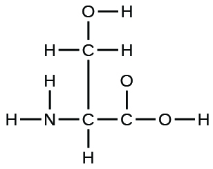
(b) urea:
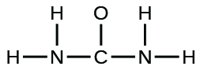
(c) ácido pirúvico:
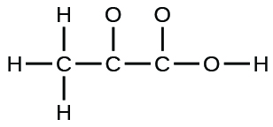
(d) uracilo:
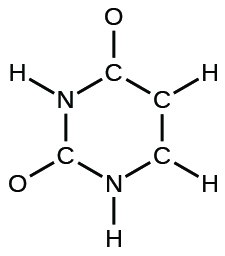
(e) ácido carbónico:
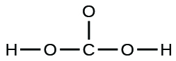
40. Un compuesto con una masa molar de aproximadamente 28 g/mol contiene 85,7% de carbono y 14,3% de hidrógeno en masa. Escribe la estructura de Lewis para una molécula del compuesto.
41. Un compuesto con una masa molar de aproximadamente 42 g/mol contiene 85,7% de carbono y 14,3% de hidrógeno en masa. Escribe la estructura de Lewis para una molécula del compuesto.
42. Dos arreglos de átomos son posibles para un compuesto con una masa molar de aproximadamente 45 g/mol que contiene 52.2% de C, 13.1% de H y 34.7% de O en masa. Escribe las estructuras de Lewis para las dos moléculas.
43. ¿En qué se parecen los enlaces simples, dobles y triples? ¿Cómo se diferencian?
44. Escribe formas de resonancia que describan la distribución de electrones en cada una de estas moléculas o iones. (a) dióxido de selenio, $OSeO$ (b) ion nitrato, $NO_3^−$ (c) ácido nítrico, $HNO_3$ (N está unido a un grupo $OH$ y dos átomos de O) (d) benceno, $C_6H_6$:
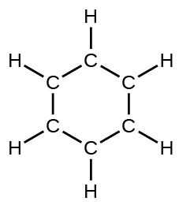
(e) el ion formiato:
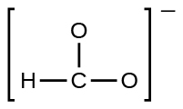
45. Escribe formas de resonancia que describan la distribución de electrones en cada una de estas moléculas o iones. (a) dióxido de azufre, $SO_2$ (b) ion carbonato, $CO_3^{2−}$ (c) ion carbonato de hidrógeno, $HCO_3^−$ (C está unido a un grupo $OH$ y dos átomos de O) (d) piridina:
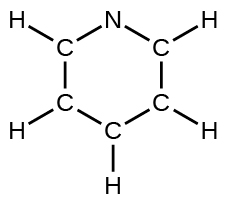
(e) el ion alilo:
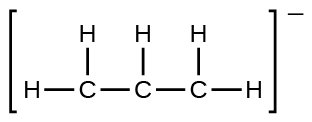
46. Escribe las formas de resonancia del ozono, $O_3$, el componente de la atmósfera superior que protege la Tierra de la radiación ultravioleta.
47. El nitrito de sodio, que se ha utilizado para preservar el tocino y otras carnes, es un compuesto iónico. Escribe las formas de resonancia del ion nitrito, $NO_2^–$.
48. En términos de los enlaces presentes, explica por qué el ácido acético, $CH_3CO_2H$, contiene dos tipos distintos de enlaces carbono-oxígeno, mientras que el ion acetato, formado por la pérdida de un ion hidrógeno del ácido acético, solo contiene un tipo enlace de carbono-oxígeno. Se muestran las estructuras esqueléticas de estas especies:
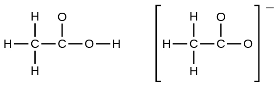
49. Escribe las estructuras de Lewis para lo siguiente e incluya estructuras de resonancia cuando sea apropiado. Indica cuál tiene el enlace carbono-oxígeno más fuerte. (a) $CO_2$ (b) $CO$
50. Las pastas dentales que contienen hidrogenocarbonato de sodio (bicarbonato de sodio) y peróxido de hidrógeno son ampliamente utilizadas. Escribe estructuras de Lewis para la molécula de ión carbonato de hidrógeno y peróxido de hidrógeno, con formas de resonancia cuando sea apropiado.
51. Determina la carga formal de cada elemento de la siguiente manera: (a) $HCl$ (b) $CF_4$ (c) $PCl_3$ (d) $PF_5$
52. Determina la carga formal de cada elemento de la siguiente manera: (a) $H_3O^+$ (b) $SO_4^{2−}$ (c) $NH_3$ (d) $O_2^{2−}$ (e) $H_2O_2$
53. Calcula la carga formal de cloro en las moléculas $Cl_2$, $BeCl_2$ y $ClF_5$.
54. Calcula la carga formal de cada elemento en los siguientes compuestos e iones: (a) $F_2CO$ (b) $NO^–$ (c) $BF_4^−$ (d) $SnCl_3^−$ (e) $H_2CCH_2$ (f) $ClF_3$ (g) $SeF_6$ (h) $PO_4^{3−}$
55. Dibuja todas las estructuras de resonancia posibles para cada uno de estos compuestos. Determina la carga formal en cada átomo en cada una de las estructuras de resonancia: (a) $O_3$ (b) $SO_2$ (c) $NO_2^−$ (d) $NO_3^−$
56. Basado en consideraciones de carga formal, ¿cuál de las siguientes opciones sería la disposición correcta de los átomos en cloruro de nitrosilo: $ClNO$ o $ClON$?
57. Según las consideraciones formales de carga, ¿cuál de las siguientes opciones sería la disposición correcta de los átomos en el ácido hipocloroso: $HOCl$ u $OClH$?
58. Según las consideraciones de carga formal, ¿cuál de las siguientes opciones sería la disposición correcta de los átomos en dióxido de azufre: $OSO$ o $SOO$?
59. Dibuja la estructura de hidroxilamina, $H_3NO$ y asigna cargas formales; mira la estructura. ¿La estructura real es consistente con las cargas formales?
60. El yodo forma una serie de fluoruros (enumerados aquí). Escribe las estructuras de Lewis para cada uno de los cuatro compuestos y determine la carga formal del átomo de yodo en cada molécula: (a) $IF$ (b) $IF_3$ (c) $IF_5$ (d) $IF_7$
61. Escribe la estructura de Lewis y la fórmula química del compuesto con una masa molar de aproximadamente 70 g/mol que contiene 19.7% de nitrógeno y 80.3% de flúor en masa, y determina la carga formal de los átomos en este compuesto.
62. ¿Cuál de las siguientes estructuras esperaríamos para el ácido nitroso? Determina las cargas formales:
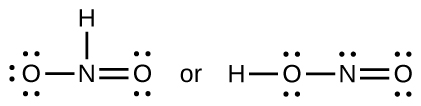
63. El ácido sulfúrico es el químico industrial producido en mayor cantidad en todo el mundo. Alrededor de 90 mil millones de libras se producen cada año solo en los Estados Unidos. Escribe la estructura de Lewis para el ácido sulfúrico, $H_2SO_4$, que tiene dos átomos de oxígeno y dos grupos $OH$ unidos al azufre.
64. ¿Qué enlace en cada uno de los siguientes pares de enlaces es el más fuerte? (a) $\ce{C – C}$ o $\ce{C = C}$ (b) $\ce{C – N}$ o $\ce{C # N}$ (c) $\ce{C # O}$ o $\ce{C = O}$ (d) $\ce{H – F}$ o $\ce{H – Cl}$ (e) $\ce{C – H}$ u $\ce{O – H}$ (f) $\ce{C – N}$ o $\ce{C – O}$
65. Utilizando las energías de enlace en la tabla 7.2, determina el cambio aproximado de entalpía para cada una de las siguientes reacciones: (a) $\ce{H_2 (g) + Br_2 (g) -> 2HBr (g)}$ (b) $\ce{CH_4 (g) + I_2 (g ) -> CH_3I (g) + HI (g)}$ (c) $\ce{C_2H_4 (g) + 3O_2 (g) -> 2CO_2 (g) + 2H_2O (g)}$
66. Utilizando las energías de enlace en la tabla 7.2, determina el cambio aproximado de entalpía para cada una de las siguientes reacciones: (a) $\ce{Cl_2 (g) + 3F_2 (g) -> 2ClF_3 (g)}$ (b) $\ce{H_2C = CH_2 (g) + H_2 (g) -> H_3CCH_3 (g)}$ (c) $\ce{2C_2H_6 (g) + 7O_2 (g) -> 4CO_2 (g) + 6H_2O (g)}$
67. Cuando una molécula puede formar dos estructuras diferentes, la estructura con los enlaces más fuertes suele ser la forma más estable. Usa energías de enlace para predecir la estructura correcta de la molécula de hidroxilamina:
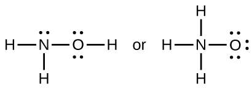
68. ¿Cómo difiere la energía de enlace del $HCl (g)$ de la entalpía estándar de formación de $HCl (g)$?
69. Utilizando los datos de la entalpía estándar de formación en el Apéndice B, muestra cómo se puede usar la entalpía estándar de formación de $HCl (g)$ para determinar la energía de enlace.
70. Utilizando la entalpía estándar de datos de formación en el Apéndice B, calcula la energía de enlace del doble enlace carbono-azufre en $CS_2$.
71. Utilizando la entalpía estándar de datos de formación en el Apéndice B, determina qué enlace es más fuerte: ¿el enlace $\ce{S-F}$ en $SF_4 (g)$ o en $SF_6 (g)$?
72. Usando la entalpía estándar de datos de formación en el Apéndice B, determina qué enlace es más fuerte: ¿el enlace $\ce{P-Cl}$ en $PCl_3 (g)$ o en $PCl_5 (g)$?
73. Completa la siguiente estructura de Lewis agregando enlaces (no átomos) y luego indica el enlace más largo:
74. Usa la energía de enlace para calcular un valor aproximado de $\Delta H$ para la siguiente reacción. ¿Cuál es la forma más estable de $FNO_2$?
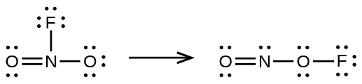
75. Utiliza los principios de la estructura atómica para responder a cada una de las siguientes preguntas: 1 (a) El radio del átomo de $Ca$ es 197 pm; El radio del ion $Ca_2^+$ es de 99 pm. (b) La energía reticular de $CaO (s)$ es –3460 kJ/mol; La energía reticular de $K_2O$ es –2240 kJ/mol. (c) Dados estos valores de ionización, explica la diferencia entre $Ca$ y $K$ con respecto a sus energías de ionización primera y segunda.
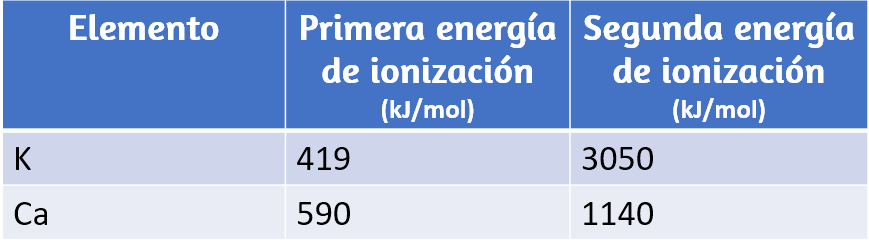
(d) La primera energía de ionización del Mg es 738 kJ/mol y la de Al es 578 kJ/mol. Ten en cuenta esta diferencia.
76. La energía reticular de $LiF$ es 1023 kJ/mol, y la distancia $Li-F$ es 200.8 pm. El $NaF$ cristaliza en la misma estructura que $LiF$ pero con una distancia de $Na-F$ de 231 pm. ¿Cuál de los siguientes valores se aproxima más a la energía reticular del $NaF$: 510, 890, 1023, 1175 o 4090 kJ/mol? Explica tu elección.
77. ¿Para cuál de las siguientes sustancias se requiere menos energía para convertir un mol del sólido en iones separados? (a) $MgO$ (b) $SrO$ (c) $KF$ (d) $CsF$ (e) $MgF_2$
78. La reacción de un metal, M, con un halógeno, $X_2$, se produce mediante una reacción exotérmica como se indica en esta ecuación: $\ce{M (s) + X_2 (g) -> MX_2 (s)}$. Para cada uno de los siguientes, indica qué opción hará que la reacción sea más exotérmica. Explica tus respuestas. (a) un radio grande frente a un radio pequeño para M + 2 (b) una energía de ionización alta frente a una energía de ionización baja para M (c) una energía de enlace creciente para el halógeno (d) una afinidad electrónica decreciente por el halógeno (e) un tamaño creciente del anión formado por el halógeno
79. La energía reticular de $LiF$ es 1023 kJ/mol, y la distancia $Li – F$ es 201 pm. El $MgO$ cristaliza en la misma estructura que el $LiF$ pero con una distancia $Mg – O$ de 205 pm. ¿Cuál de los siguientes valores se aproxima más a la energía reticular de $MgO$: 256 kJ/mol, 512 kJ/mol, 1023 kJ/mol, 2046 kJ/mol o 4008 kJ/mol? Explica tu elección.
80. ¿Qué compuesto en cada uno de los siguientes pares tiene la energía reticular más grande? Nota: $Mg_2^+$ + y $Li^+ $ tienen radios similares; $O_2^–$ y $F^–$ tienen radios similares. Explica tus elecciones. (a) $MgO$ o $MgSe$ (b) $LiF$ o $MgO$ (c) $Li_2O$ o $LiCl$ (d) $Li_2Se$ o $MgO$
81. ¿Qué compuesto en cada uno de los siguientes pares tiene la energía reticular más grande? Nota: $Ba_2^+$ y $K^+$ tienen radios similares; $S_2^–$ y $Cl^–$ tienen radios similares. Explica tus elecciones. (a) $K_2O$ o $Na_2O$ (b) $K_2S$ o $BaS$ (c) $KCl$ o $BaS$ (d) $BaS$ o $BaCl_2$
82. ¿Cuál de los siguientes compuestos requiere la mayor cantidad de energía para convertir un mol del sólido en iones separados? (a) $MgO$ (b) $SrO$ (c) $KF$ (d) $CsF$ (e) $MgF_2$
83. ¿Cuál de los siguientes compuestos requiere la mayor cantidad de energía para convertir un mol del sólido en iones separados? (a) $K_2S$ (b) $K_2O$ (c) $CaS$ (d) $Cs_2S$ (e) $CaO$
84. La energía reticular de $KF$ es 794 kJ/mol, y la distancia interiónica es 269 pm. La distancia $Na – F$ en $NaF$, que tiene la misma estructura que $KF$, es 231 pm. ¿Cuál de los siguientes valores es la aproximación más cercana de la energía de red de $NaF$: 682 kJ/mol, 794 kJ/mol, 924 kJ/mol, 1588 kJ/mol, o 3175 kJ/mol? Explica tu respuesta.
85. Explica por qué la molécula $HOH$ está doblada, mientras que la molécula $HBeH$ es lineal.
86. ¿Qué característica de una estructura de Lewis se puede usar para determinar si la geometría y la estructura molecular de un par de electrones de una molécula (o ión) serán idénticas?
87. Explica la diferencia entre la geometría de pares de electrones y la estructura molecular.
88. ¿Por qué el ángulo $\ce{H – N – H}$ en $NH_3$ es más pequeño que el ángulo de enlace $\ce{H – C - H}$ en $CH_4$? ¿Por qué el ángulo $\ce{H – N – H}$ en $NH_4^+$ es idéntico al ángulo de enlace $\ce{H – C - H}$ en $CH_4$?
89. Explica cómo una molécula que contiene enlaces polares puede ser no polar.
90. Como regla general, las moléculas MXn (donde M representa un átomo central y X representa átomos terminales; n = 2 - 5) son polares si hay uno o más pares de electrones solitarios en M. El $NH_3$ (M = N, X = H, n = 3) es un ejemplo. Hay dos estructuras moleculares con pares solitarios que son excepciones a esta regla. ¿Qué son?
91. Predecir la geometría del par de electrones y la estructura molecular de cada una de las siguientes moléculas o iones: (a) $SF_6$ (b) $PCl_5$ (c) $BeH_2$ (d) $CH_3^+$
92. Identifica la geometría del par de electrones y la estructura molecular de cada una de las siguientes moléculas o iones: (a) $IF_6^+ $(b) $CF_4$ (c) $BF_3$ (d) $SiF_5^−$ (e) $BeCl_2$
93. ¿Cuál es la geometría de los pares de electrones y la estructura molecular de cada una de las siguientes moléculas o iones? (a) $ClF_5$ (b) $ClO_2^−$ (c) $TeCl_4^{2−}$ (d) $PCl_3$ (e) $SeF_4$ (f) $PH_2^−$
94. Predecir la geometría del par de electrones y la estructura molecular de cada uno de los siguientes iones: (a) $H_3O^+$ (b) $PCl_4^−$ (c) $SnCl_3^−$ (d) $BrCl_4^−$ (e) $ICl_3$ (f) $XeF_4$ (g) $SF_2$
95. Identifica la geometría del par de electrones y la estructura molecular de cada una de las siguientes moléculas: (a) $ClNO$ ($N$ es el átomo central) (b) $CS_2$ (c) $Cl_2CO$ ($C$ es el átomo central) (d) $Cl_2SO$ ($S$ es el átomo central) (e) $SO_2F_2$ ($S $es el átomo central) (f) $XeO_2F_2$ ($Xe$ es el átomo central) (g) $ClOF_2^+$ ($Cl$ es el átomo central)
96. Predecir la geometría del par de electrones y la estructura molecular de cada uno de los siguientes: (a) $IOF_5$ ($I$ es el átomo central) (b) $POCl_3$ ($P$ es el átomo central) (c) $Cl_2SeO$ ($Se$ es el átomo central) (d) $ClSO^+$ ($S$ es el átomo central) (e) $F_2SO$ ($S$ es el átomo central) (f) $NO_2^−$ (g) $SiO_4^{4−}$
97. ¿Cuál de las siguientes moléculas e iones contienen enlaces polares? ¿Cuál de estas moléculas e iones tienen momentos dipolares? (a) $ClF_5$ (b) $ClO_2^−$ (c) $TeCl_4^{2−}$ (d) $PCl_3$ (e) $SeF_4$ (f) $PH_2^−$ (g) $XeF_2$
98. ¿Cuál de estas moléculas e iones contienen enlaces polares? ¿Cuáles de estas moléculas e iones tienen momentos dipolares? (A) $H_3O^+$ (b) $PCl_4^−$ (c) $SnCl_3^−$ (d) $BrCl_4^−4 (e) $ICl_3$ (f) $XeF_4$ (g) $SF_2$
99. ¿Cuál de las siguientes moléculas tiene momentos dipolares? (a) $CS_2$ (b) $SeS_2$ (c) $CCl_2F_2$ (d) $PCl_3$ ($P4$ es el átomo central) (e) $ClNO$ ($N$ es el átomo central)
100. Identifica las moléculas con un momento dipolar: (a) $SF_4$ (b) $CF_4$ (c) $Cl_2CCBr_2$ (d) $CH_3Cl$ (e) $H_2CO$
101. La molécula $XF_3$ tiene un momento dipolar. ¿Es X boro o fósforo?
102. La molécula $XCl_2$ tiene un momento dipolar. ¿Es X berilio o azufre?
103. ¿La molécula de $Cl_2BBCl_2$ es polar o no polar?
104. Hay tres estructuras posibles para $PCl_2F_3$ con fósforo como átomo central. Dibújalos y discute cómo las mediciones de los momentos dipolares podrían ayudar a distinguirlos.
105. Describe la estructura molecular alrededor del átomo o átomos indicados: (a) el átomo de azufre en ácido sulfúrico, $H_2SO_4 \quad [(HO)\quad 2SO_2]$ (b) el átomo de cloro en ácido clorhídrico, $HClO_3 \quad [HOClO_2]$ (c) el átomo de oxígeno en peróxido de hidrógeno, $HOOH$ (d) el átomo de nitrógeno en ácido nítrico, $HNO_3 \quad [HONO_2]$ (e) el átomo de oxígeno en el grupo $OH$ en ácido nítrico, $HNO_3 \quad [HONO_2]$ (f) el átomo de oxígeno central en la molécula de ozono, $O_3 (g)$ cada uno de los átomos de carbono en propino, $CH_3CCH$ (h) el átomo de carbono en Freón, $CCl_2F_2$ (i) cada uno de los átomos de carbono en aleno, $H_2CCCH_2$
106. Dibuja las estructuras de Lewis y predice la forma de cada compuesto o ion: (a) $CO_2$ (b) $NO_2^−$ (c) $SO_3$ (d) $SO_3^{2−}$
107. Una molécula con la fórmula $AB_2$, en la que A y B representan átomos diferentes, podría tener una de tres formas diferentes. Dibuja y nombra las tres formas diferentes que podría tener esta molécula. Da un ejemplo de una molécula o ion para cada forma.
108. Una molécula con la fórmula $AB_3$, en la que A y B representan átomos diferentes, podría tener una de tres formas diferentes. Dibuja y nombra las tres formas diferentes que podría tener esta molécula. Da un ejemplo de una molécula o ion que tenga cada forma.
109. Dibuja las estructuras de puntos de electrones de Lewis para estas moléculas, incluidas las estructuras de resonancia cuando corresponda: (a) $CS_3^{2−}$ (b) $CS_2$ (c) $CS$ (d) predice las formas moleculares para $CS_3^{2−}$ y $CS_2$ y explica cómo llegaste a tus predicciones
110. ¿Cuál es la estructura molecular de la forma estable de $FNO_2$? (N es el átomo central).
111. Un compuesto con una masa molar de aproximadamente 42 g/mol contiene 85,7% de carbono y 14,3% de hidrógeno. ¿Cuál es su estructura molecular?
112. Usa la simulación:
Ampliar
para realizar los siguientes ejercicios para una molécula de dos átomos: (a) Ajusta el valor de electronegatividad para que el dipolo de enlace apunte hacia B. Luego determina cuáles deben ser los valores de electronegatividad para cambiar el dipolo de modo que apunte hacia A. (b) Con una carga positiva parcial en A, enciende el campo eléctrico y describe lo que sucede. (c) Con una pequeña carga negativa parcial en A, enciende el campo eléctrico y describe lo que sucede. (d) Restablece todo, y luego con una carga negativa parcial grande en A, enciende el campo eléctrico y describe lo que sucede.
113. Usa la simulación anterior para realizar los siguientes ejercicios para una molécula real. Es posible que debas rotar las moléculas en tres dimensiones para ver ciertos dipolos. (a) Dibuja los dipolos de enlace y el dipolo molecular (si los hay) para $O_3$. Explica tus observaciones. (b) Mira los dipolos de enlace para $NH_3$. Usa estos dipolos para predecir si $N$ o $H$ es más electronegativo. (c) Predecir si debería haber un dipolo molecular para $NH_3$ y, de ser así, en qué dirección apuntará. Marca la casilla del dipolo molecular para probar tu hipótesis.
114. Usa el simulador:
Ampliar
para construir una molécula. Comenzando con el átomo central, haz clic en el doble enlace para agregar un doble enlace. Luego agregue un enlace sencillo y un par solitario. Gira la molécula para observar la geometría completa. Nombra la geometría del grupo de electrones y la estructura molecular y predice el ángulo de enlace. Luego haz clic en las casillas de verificación en la parte inferior y derecha del simulador para verificar tus respuestas.
115. Usa el simulador anterior para explorar moléculas reales. En la pestaña Moléculas reales, seleccione $H_2O$. Cambia entre los modos "real" y "modelo". Explica la diferencia observada.
116. Usa el simulador anterior para explorar moléculas reales. En la pestaña Moléculas reales, selecciona el modo "modelo" y $S_2O$. ¿Cuál es el ángulo de enlace del modelo? Explica si el ángulo de enlace "real" debe ser mayor o menor que el ángulo ideal del modelo.